This is my project website to explore data visualisations and to make new creative data visualisations.
Welcome To The Guide!
A Website by Luca Fornasari
Blog 1: Representation - A close reading and reflection on a Selected passage from
Kidd, J. (2015) Representation. Routledge.
Blog 2: Historic Data Visualisation - an analysis of Edmond Halleys historic data
visualisation tied in closely with the kidd Representation reading.
Blog 3: Data-driven Storytelling - Close reading and reflection on one of the selected
essays from Riche, N. H. et al. (eds) (2018) Data-driven storytelling. Boca Raton, Florida:
CRC Press/Taylor & Francis Group (A K Peters Visualization Series).
Blog 4::
Blog 5:
Blog 6:

Data Visualisation 1
Data Visualisation 2
Data Visualisation 3